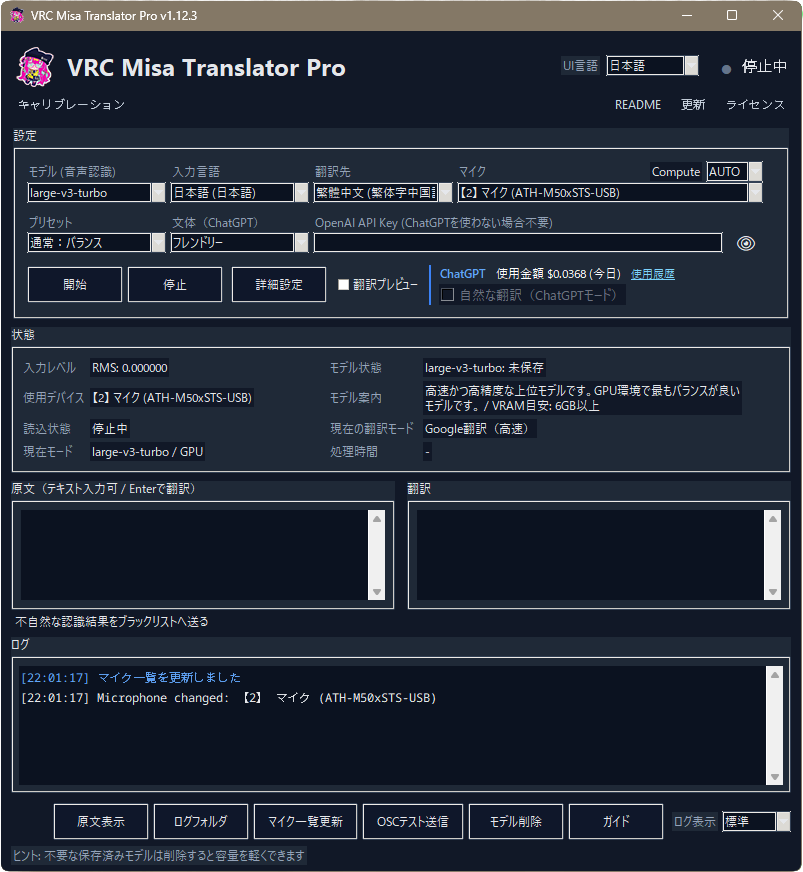
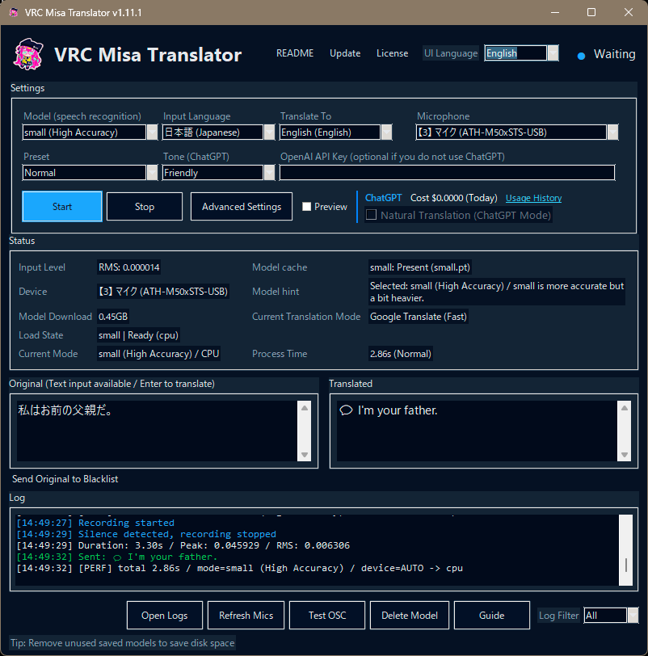
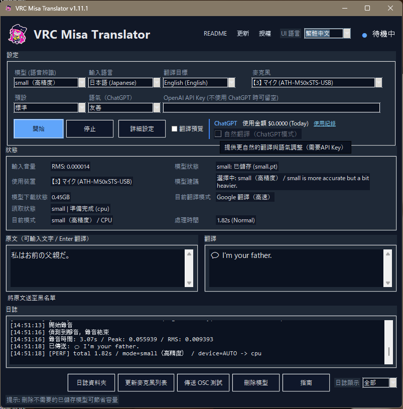
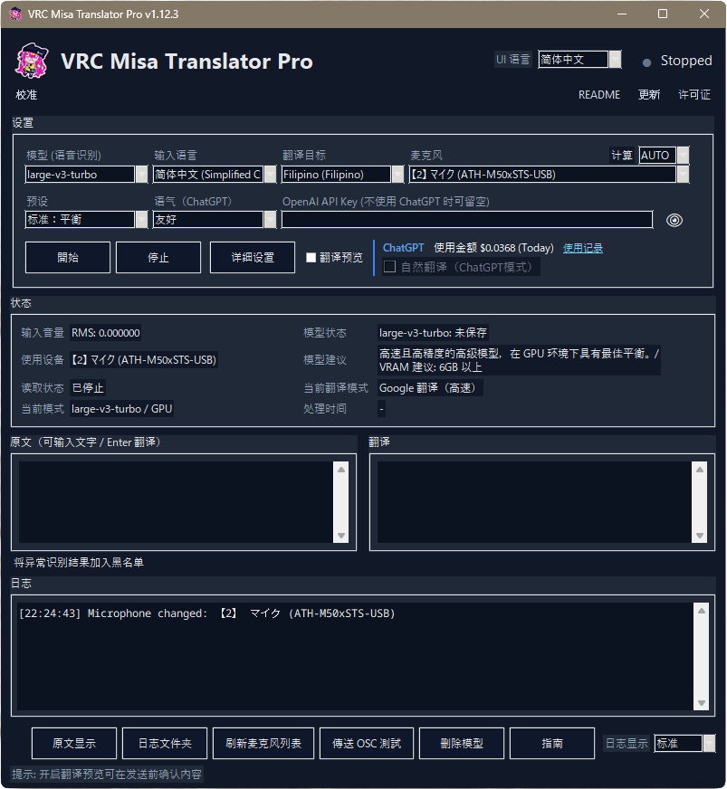
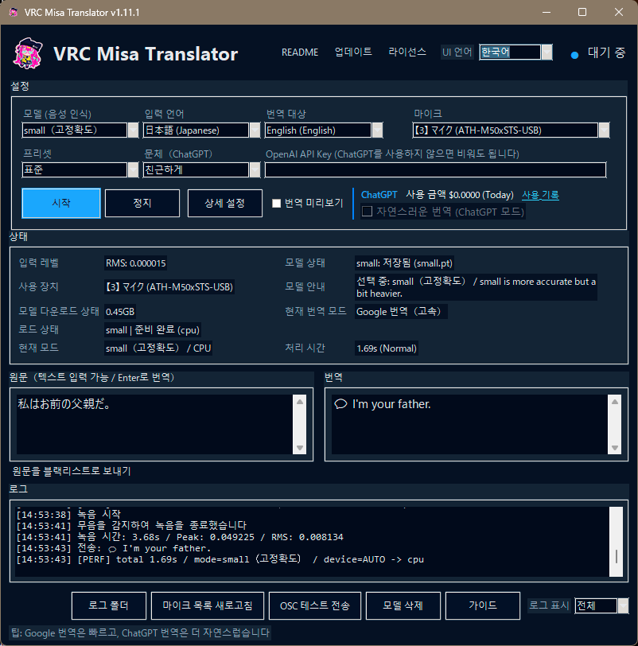

VRC Misa Translator
v1.12.3 公開
🎤 話す → 🌍 翻訳 → 💬 送信
Unity不要。デスクトップアプリとしてすぐに使えます。
VRChat用リアルタイム翻訳ツール
🌍 24言語対応
🎤 VAD / 🪟 原文Overlay / 🚀 Pro版公開
VRC Misa Translator は、音声入力・テキスト入力を翻訳し、VRChat Chatboxへ送信できるデスクトップアプリです。
アプリ画面
リアルタイム音声翻訳・テキスト入力・OSC Chatbox送信・5言語UIに対応したデスクトップアプリ画面です。
UI言語は現在、日本語 / 英語 / 繁體中文 / 简体中文 / 한국어 に対応しています。





🌍 README
言語を選択してください（24言語対応）
Download
お好みの配布サイトからダウンロードできます。
更新内容
v1.12.3では、VAD、原文Overlay、セーフリスト、24言語対応、Pro版/GPU版を追加・改善しました。
- 🎤 VAD（Voice Activity Detection）
- 🪟 原文Overlay
- 🛡️ セーフリスト
- 🌍 24言語対応
- 🚀 Pro版 / GPU版リリース
🗺️ 開発予定
VRC Misa Translator の今後の開発予定です。
- 音声認識結果の校正機能
- Speaker Language Detection
- Incoming Voice Translation Overlay
- Translation Quality Improvements
- More to come...
このツールについて
VRC Misa Translator は、音声翻訳、手入力翻訳、OSC Chatbox送信、VRChatでの多言語コミュニケーションをサポートします。